Je garde les leads, scores et sites déjà trouvés.
01 · Ouverture
Je passe de la preuve légale au contact réel
Après data.gouv, je sais mieux qui est derrière chaque restaurant. Maintenant je veux savoir comment joindre ces entreprises proprement : email, téléphone, réseaux, page contact et source exacte.
02 · Logique
Le fichier de départ est déjà précieux
Je ne recommence pas à zéro. Je complète une base qui contient déjà les sites, les villes, les scores et les informations data.gouv.
J’ajoute les contacts publics et leurs sources.
Je prépare nettoyage, scoring et prospection.
03 · Base
Je vérifie les volumes avant de crawler
La feuille affiche 11 839 leads, 10 143 enrichis SIREN/SIRET et 4 190 prêts pour Apify en priorité haute ou moyenne. Ce diagnostic évite de lancer un crawler au hasard.
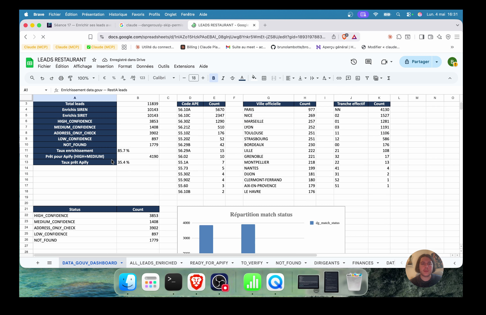
04 · Avant / après
data.gouv et Apify ne font pas le même travail
Je sépare les couches pour garder une base lisible et contrôlable.
| Point | Usage | Décision |
|---|---|---|
| data.gouv | SIREN, SIRET, raison sociale, activité | Prouver que l’entreprise existe |
| Apify | Email, téléphone, réseaux, pages sources | Trouver comment la joindre |
| Scoring | Canal recommandé et prochaine action | Préparer la prospection |
05 · Pages
Je ne crawle pas tout le site au hasard
Je cible les pages qui ont le plus de chances de contenir un contact : accueil, contact, mentions légales, réservation, privatisation, groupes ou événements.
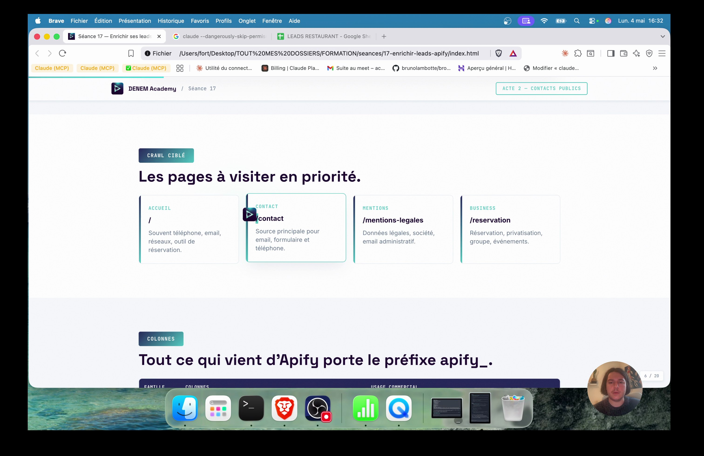
06 · Cible
Ce que je veux récupérer
Je cherche uniquement des informations visibles publiquement sur les sites officiels.
- 01
emails publics
- 02
téléphones publics
- 03
pages contact
- 04
formulaires
- 05
pages réservation
- 06
Instagram, Facebook, LinkedIn, TikTok
07 · Principe
Une source vaut mieux qu’un contact isolé
Un email sans page source est juste une donnée. Un email avec sa page source devient une preuve exploitable.
Un email sans page source est juste une donnée. Un email avec sa page source devient une preuve exploitable.
08 · Sécurité
Je garde le crawler propre
L’objectif est d’apprendre une méthode professionnelle : domaine officiel, coût maîtrisé, token protégé, aucune donnée privée inventée.
Je reste sur le site de l’entreprise.
Je récupère ce qui est visible et utile.
Je surveille coût, RAM et runs.
09 · Priorité
Je ne traite pas toute la base de la même façon
Je commence par les leads fiables et utiles commercialement.
| Point | Usage | Décision |
|---|---|---|
| 1 | HIGH_CONFIDENCE | Je commence par les matchs légaux fiables. |
| 2 | MEDIUM_CONFIDENCE | Je traite ensuite les matchs probables. |
| 3 | Website présent | Apify ne sert que si je peux crawler un domaine. |
| 4 | Email ou téléphone absent | J’enrichis d’abord là où le gain est clair. |
10 · Chaîne
La chaîne complète reste simple
Chaque étape produit un fichier ou une preuve que je peux contrôler.
Base data.gouv
Sites officiels
Actor Apify
Batch 50
Sortie normalisée
Merge XLSX
11 · Apify
Je découvre Apify comme bibliothèque d’actors
Un actor est un scraper prêt à l’emploi. Je peux l’utiliser seul, avec une API, ou dans une chaîne pilotée par IA.
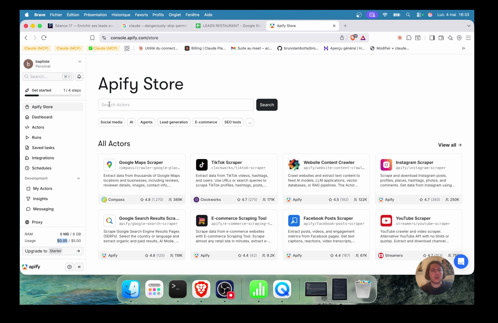
12 · Accès
Je passe par le Store ou la Console
Je crée un compte, j’arrive sur le dashboard, puis je cherche l’actor qui correspond au cas : extraire des contacts depuis des sites web.
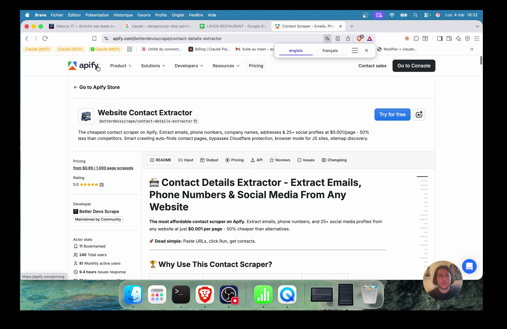
13 · Crédits
Les crédits gratuits suffisent pour tester
L’intérêt est de valider la méthode sans engager un gros budget. Le test manuel sert à comprendre le coût avant les lots.
Créer un compte donne de quoi tester.
Le premier lancement doit être petit.
Je continue seulement si les signaux sont bons.
14 · Exemples
Je regarde aussi d’autres actors pour comprendre la logique
TikTok, YouTube, Facebook, jobs, TripAdvisor : Apify peut servir à beaucoup de scénarios clients. Ici je reste concentré sur les contacts B2B.
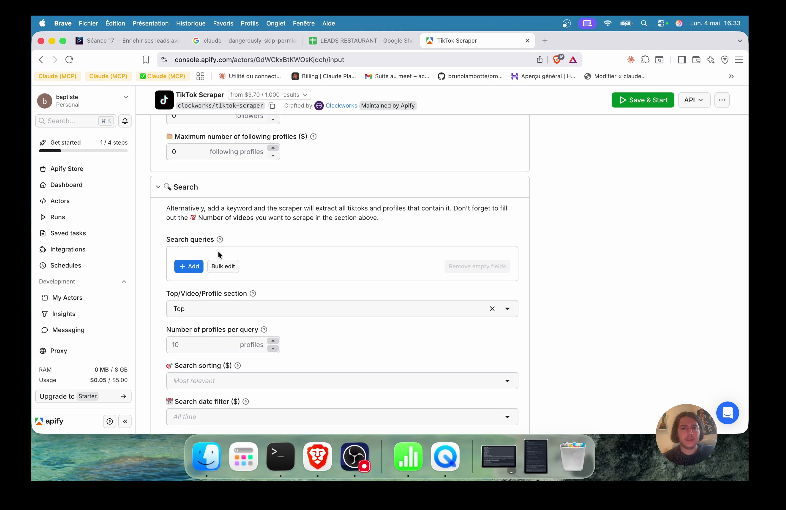
15 · Coût
Je lis le prix avant de lancer
Certains actors facturent par résultat, d’autres par événement ou par exécution. Une mauvaise configuration peut consommer le budget très vite.
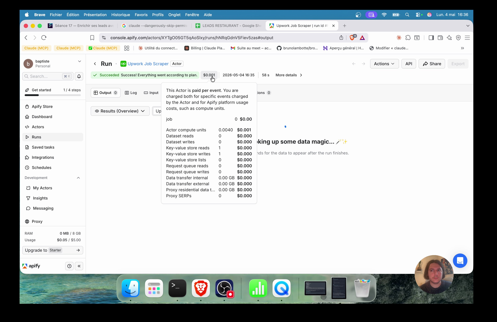
16 · Budget
Je ne laisse jamais tourner sans surveiller
Le crédit offert aide à tester, mais le bon réflexe est de regarder le coût, la RAM et les runs en cours.
17 · Recherche
Je cherche Website Contact Extractor
Je tape le nom dans Apify Store, puis je compare les résultats. Le but est de choisir un actor qui crawle des URLs et extrait les contacts.
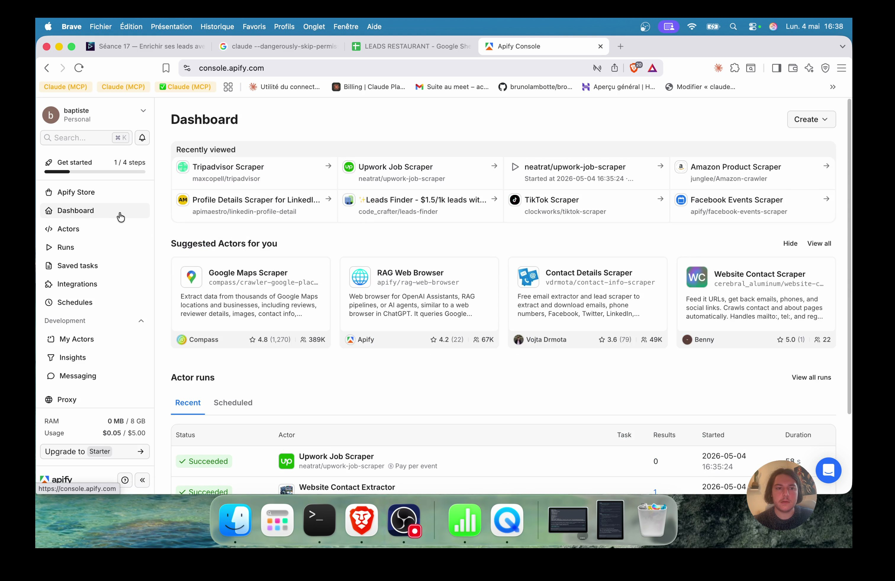
18 · Choix
Je prends l’actor le plus adapté
`betterdevsscrape/contact-details-extractor` est choisi car il extrait emails, téléphones, réseaux sociaux et pages sources depuis un domaine.
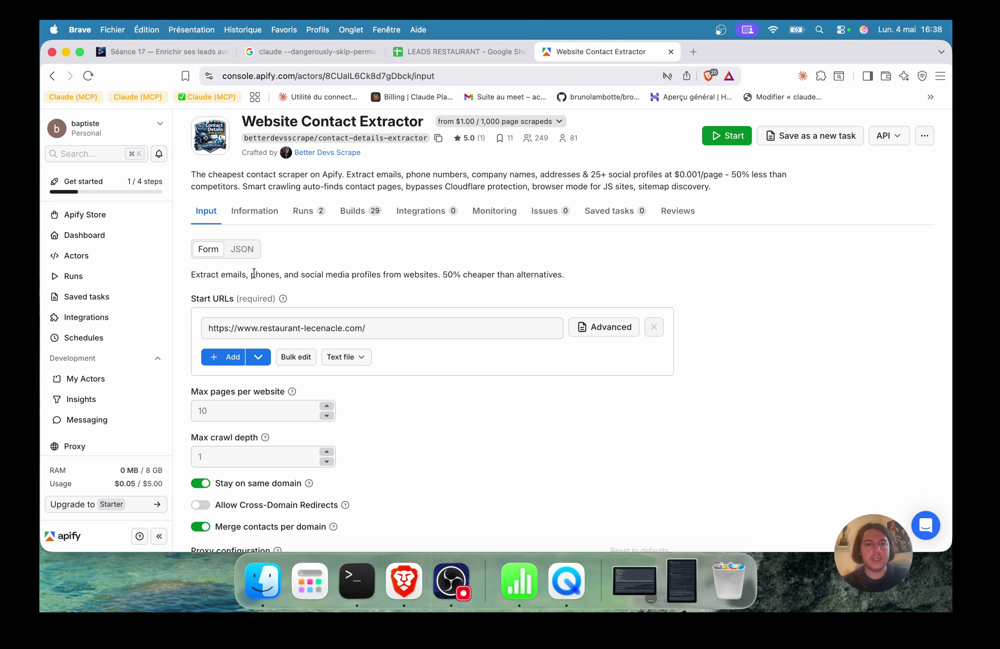
19 · Lecture
Je lis la fiche avant de cliquer Start
La fiche donne le prix, les onglets utiles, les runs, les builds, les intégrations et la documentation. Je ne lance pas à l’aveugle.
Comment l’actor reçoit les URLs.
Comment il décrit ses sorties.
Comment lire les exécutions passées.
20 · Actor
Prompt pour choisir un actor Apify
Ce prompt sert si tu veux refaire le choix d’actor sur un autre cas client.
Prompt à copierPrompt pour choisir un actor Apify
Ce prompt sert si tu veux refaire le choix d’actor sur un autre cas client.
Tu es mon analyste Apify. Je veux enrichir une base B2B avec des contacts publics depuis les sites officiels. Compare les actors disponibles pour : - recevoir une liste d'URLs - rester sur le même domaine - extraire emails, téléphones, réseaux sociaux - retourner les pages sources - fonctionner par lots Donne-moi l'actor recommandé, ses limites, son coût probable et un test de 5 URLs.
21 · Test
Je teste une URL officielle manuellement
Je colle une URL de restaurant dans Start URLs pour vérifier si l’actor trouve vraiment des contacts.
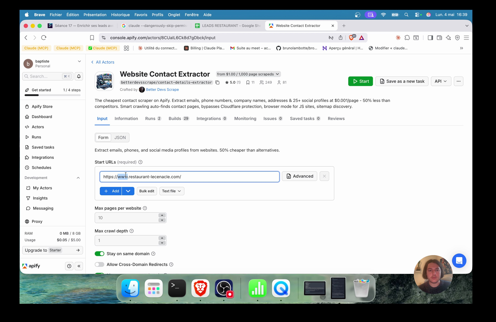
22 · Paramètres
Je garde une configuration raisonnable
Le test doit être petit : quelques pages, même domaine, profondeur limitée, pas de proxy au départ.
| Point | Usage | Décision |
|---|---|---|
| maxPagesPerStartUrl | 8 au départ | Assez pour contact, mentions, accueil et réservation. |
| maxDepth | 2 | Évite de partir trop loin. |
| sameDomain | true | Reste sur le site officiel. |
| proxy | false au départ | Réduit coût et complexité. |
23 · Contrôle
Ce que je regarde pendant le test
Je regarde les pages visitées, les contacts trouvés, les logs, le coût et la durée.
- 01
Le run démarre correctement
- 02
Les pages visitées sont pertinentes
- 03
Le coût reste lisible
- 04
Les contacts ont une source
- 05
Les erreurs sont compréhensibles
24 · Extraction
Le crawler transforme du HTML en champs utiles
L’actor lit les pages, repère des motifs comme les emails et téléphones, puis renvoie une sortie structurée.
HTMLpages utilesregex emailsregex téléphonesréseauxdataset Apify
25 · Logs
Les logs expliquent ce qui se passe
Je vérifie que le crawler visite les bonnes pages : équipe, actualités, politique de confidentialité, contact, mentions légales.
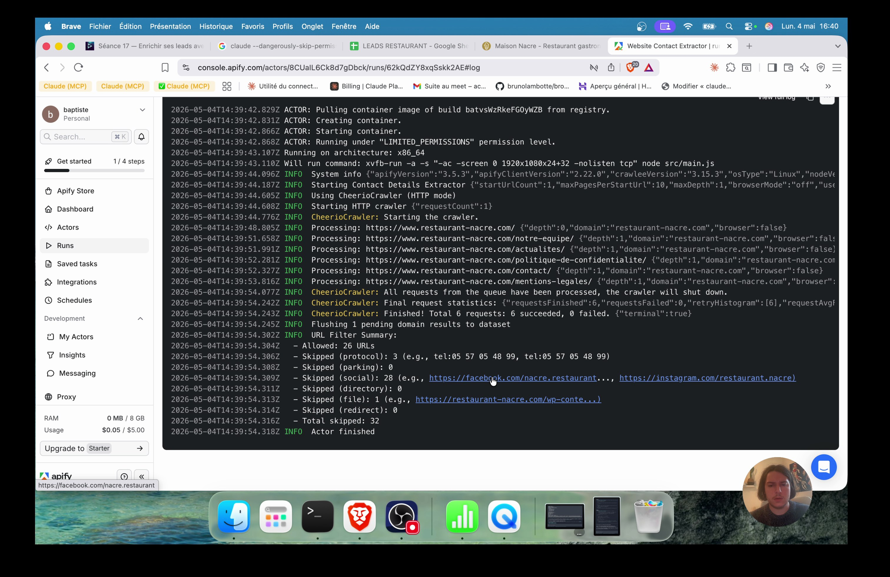
26 · Réalité
Un crawler ne trouve pas toujours un email
Certains sites affichent seulement un téléphone, un formulaire, Instagram ou une page de réservation. Ce n’est pas un échec si la source est claire.
Certains sites affichent seulement un téléphone, un formulaire, Instagram ou une page de réservation. Ce n’est pas un échec si la source est claire.
27 · Qualité
Je classe les contacts par valeur
Un email nominatif, un email général, un email de réservation et un formulaire n’ont pas le même usage commercial.
| Point | Usage | Décision |
|---|---|---|
| nominatif_pro | prenom.nom@domaine.fr | Fort si cohérent. |
| contact_general | contact@, bonjour@ | Bon pour prise de contact. |
| reservation | reservation@, booking@ | Très bon pour restauration. |
| technical | webmaster@, support technique | À éviter sauf besoin précis. |
28 · Canaux
Je ne limite pas la base à l’email
Un restaurant peut être plus joignable par téléphone, Instagram, formulaire ou page privatisation. La base doit garder ces options.
Canal direct si source fiable.
Souvent meilleur pour local.
Signal social et canal alternatif.
29 · Erreur fréquente
Ne confonds pas scraping et prospection
À ce stade je collecte les bons champs. Je n’envoie rien. La prospection vient après nettoyage, scoring et message adapté.
30 · Test
Prompt de test sur 50 sites
Ce prompt sert à éviter de lancer 10 000 sites sans diagnostic.
Prompt à copierPrompt de test sur 50 sites
Ce prompt sert à éviter de lancer 10 000 sites sans diagnostic.
Avant de traiter toute la base, lance uniquement un échantillon de 50 sites. Mesure : - pages crawlées - emails trouvés - téléphones trouvés - réseaux trouvés - sites bloqués - coût estimé - temps moyen Si le taux email + téléphone est inférieur à 10 %, arrête et fais un diagnostic.
31 · Dossier
J’ouvre une session IA dans le bon dossier
Je travaille dans le dossier du projet pour que Codex voie les fichiers, crée les scripts et écrive les sorties au bon endroit.
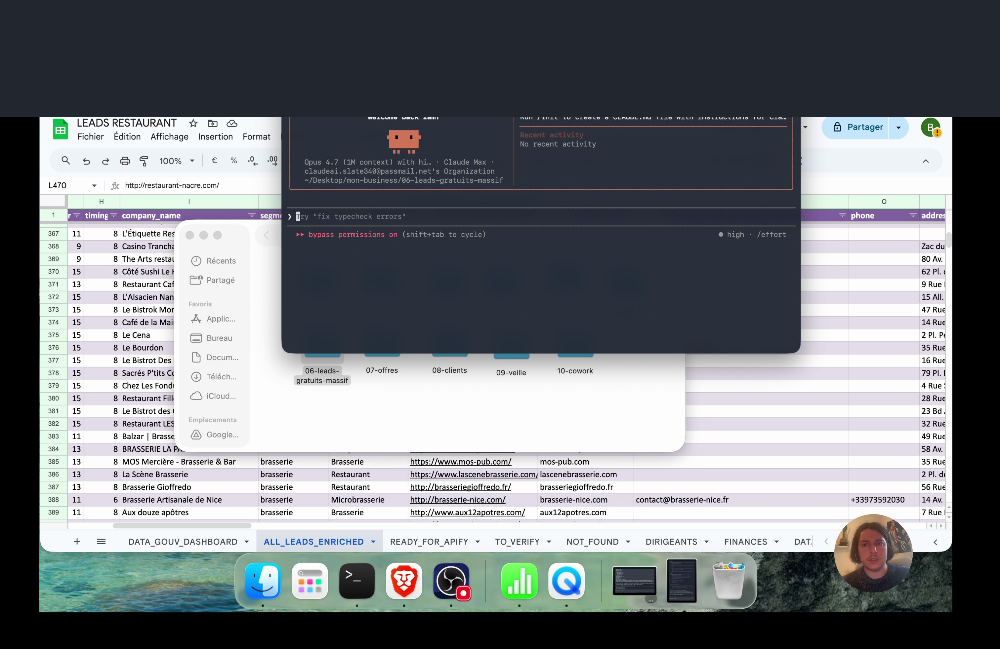
32 · Token
Je donne la clé Apify comme variable d’environnement
Le token ne doit jamais être dans le HTML, le XLSX, les logs publics ou GitHub. Il sert seulement à autoriser les appels.
Prompt à copierJe donne la clé Apify comme variable d’environnement
Le token ne doit jamais être dans le HTML, le XLSX, les logs publics ou GitHub. Il sert seulement à autoriser les appels.
cd ~/Desktop/mon-business/06-leads-gratuits-massif export APIFY_TOKEN="[TON_TOKEN_APIFY]" claude --dangerously-skip-permissions # Variante si tu préfères charger depuis un fichier local non versionné : source .env claude --dangerously-skip-permissions
33 · API
Je récupère le snippet utile depuis Apify
Chaque actor fournit son point d’entrée API. Je donne ce contexte à l’IA pour qu’elle sache appeler le bon service.
Je récupère l’exemple d’appel.
Je comprends comment lire les résultats.
Je ne colle pas la clé dans les fichiers.
34 · Secret
Si un token apparaît, je nettoie avant publication
Une clé API dans une capture, un log ou un dépôt public est une fuite. Je masque la zone et je vérifie les fichiers texte.
35 · Entrée
Les colonnes importantes sont déjà là
Je donne à l’IA les colonnes qui permettent de relier le résultat Apify au bon lead.
| Point | Usage | Décision |
|---|---|---|
| lead_id | Relier chaque résultat au bon lead | Indispensable |
| website/domain | Donner l’URL de départ | Indispensable |
| dg_match_status | Prioriser la confiance | Important |
| priority_score | Garder la logique commerciale | Important |
36 · Phases
Je force un plan en phases
Codex découpe le travail : audit base, batches, test Apify, runs, normalisation, merge, scoring, génération finale.
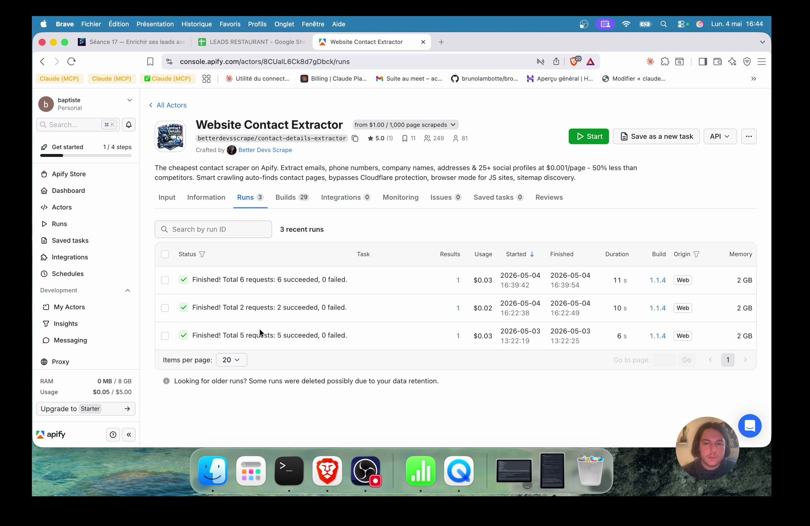
37 · Phases
La méthode est industrielle
Chaque phase a une sortie contrôlable. Si ça casse, je reprends au bon endroit.
Audit
Batches
Test 50
Runs
Normalisation
Merge
Score
Rapport
38 · Fichiers
Je veux des dossiers de sortie clairs
Les inputs, outputs bruts, résultats normalisés et ledger doivent rester séparés.
Ce que j’envoie.
Ce qu’Apify renvoie.
Ce que je peux merger proprement.
39 · Ledger
Le ledger évite les relances inutiles
Je note les batchs réussis, les coûts, les run_id et les statuts pour ne pas payer deux fois.
| Point | Usage | Décision |
|---|---|---|
| timestamp | Quand le batch tourne | Suivi |
| run_id | Identifiant Apify | Reprise |
| status | Succès ou échec | Décision |
| cost_estimate | Coût estimé | Budget |
40 · Maître
Prompt maître Apify complet
Ce prompt pilote tout l’enrichissement. Il est long parce qu’il sécurise le travail.
Prompt à copierPrompt maître Apify complet
Ce prompt pilote tout l’enrichissement. Il est long parce qu’il sécurise le travail.
Tu es un growth data engineer senior, spécialiste Apify, crawling propre de sites B2B, enrichissement de contacts publics, déduplication et préparation de bases commerciales. MISSION Tu dois reprendre le fichier enrichi avec data.gouv : @~/Desktop/mon-business/07-enrichissement-data-gouv/leads-data-gouv-enriched.xlsx Tu dois créer une nouvelle version enrichie avec les contacts visibles publiquement sur les sites web officiels des entreprises. Le but est d'ajouter : - emails publics - téléphones publics - pages contact - formulaires - pages réservation - pages privatisation - Instagram - Facebook - LinkedIn - TikTok - WhatsApp - sources exactes où les données ont été trouvées Tu ne dois pas recréer une nouvelle base. Tu dois conserver toutes les colonnes existantes et ajouter seulement des colonnes apify_. SÉCURITÉ TOKEN Lis le token Apify depuis : process.env.APIFY_TOKEN Si APIFY_TOKEN est absent, stoppe et dis : "APIFY_TOKEN absent. Ajoute le token en variable d'environnement puis relance." Ne stocke jamais le token dans un fichier. Ne l'affiche jamais dans les logs. Ne le mets jamais dans le XLSX. ACTOR APIFY RECOMMANDÉ Utilise en priorité : betterdevsscrape/contact-details-extractor Si cet actor n'est pas accessible, cherche un actor équivalent capable de : - recevoir une liste d'URLs - crawler quelques pages du même domaine - extraire emails - extraire téléphones - extraire réseaux sociaux - retourner les URLs sources FICHIER D'ENTRÉE Lis : ~/Desktop/mon-business/07-enrichissement-data-gouv/leads-data-gouv-enriched.xlsx Colonnes importantes : - lead_id - company_name - website - domain - email - phone - source_urls - dg_siren - dg_siret - dg_raison_sociale - dg_nom_commercial - dg_match_status - dg_match_score - priority_score - priority_class - personalized_angle - outreach_message RÈGLE DE PRIORISATION Traite d'abord : 1. dg_match_status = HIGH_CONFIDENCE 2. puis MEDIUM_CONFIDENCE 3. puis les leads avec website/domain présent 4. puis les leads sans email 5. puis les leads sans téléphone 6. puis les leads A+ / A Ne traite pas automatiquement : - LOW_CONFIDENCE - NOT_FOUND - ADDRESS_ONLY_CHECK sauf si l'utilisateur demande explicitement un enrichissement exploratoire. STRUCTURE DE SORTIE Crée ou complète : ~/Desktop/mon-business/08-enrichissement-apify/ Crée : - leads-apify-enriched.xlsx - leads-apify-enriched.csv - rapport-apify.md - apify-input-batches/ - apify-raw-runs/ - apify-normalized/ - apify-ledger.csv COLONNES À AJOUTER Ajoute au minimum : - apify_run_id - apify_actor - apify_start_url - apify_domain - apify_pages_crawled - apify_email_found - apify_email_all - apify_email_type - apify_email_confidence - apify_email_source_page - apify_phone_found - apify_phone_all - apify_phone_type - apify_phone_confidence - apify_phone_source_page - apify_instagram - apify_facebook - apify_linkedin - apify_tiktok - apify_youtube - apify_whatsapp - apify_contact_page - apify_booking_page - apify_privatisation_page - apify_mentions_legales_page - apify_form_detected - apify_source_pages - apify_contact_score - apify_enrichment_status - apify_merge_status - apify_notes - recommended_contact_channel - recommended_next_action PHASE 0 — AUDIT DE LA BASE Avant tout appel Apify : 1. Compte le nombre total de leads. 2. Compte les leads avec website. 3. Compte les leads sans email. 4. Compte les leads sans téléphone. 5. Compte HIGH_CONFIDENCE / MEDIUM_CONFIDENCE / ADDRESS_ONLY_CHECK / LOW_CONFIDENCE / NOT_FOUND. 6. Estime le nombre de sites à crawler. 7. Crée rapport-apify.md avec ce diagnostic initial. PHASE 1 — CONSTRUIRE LES BATCHES Crée des lots de 50 sites maximum pour commencer. Chaque entrée Apify doit contenir : - lead_id - company_name - website - domain - dg_siren - dg_siret - dg_match_status Normalise les URLs : - ajoute https:// si nécessaire - retire les paramètres inutiles - garde le domaine officiel du lead - ignore les réseaux sociaux comme site principal sauf si aucun autre site n'existe Crée : apify-input-batches/batch-001.json apify-input-batches/batch-002.json etc. PHASE 2 — TEST SUR ÉCHANTILLON Lance d'abord Apify sur 50 sites maximum. Configuration recommandée : - maxPagesPerStartUrl : 8 - maxDepth : 2 - sameDomain : true - mergeContacts : true - browserMode : auto - useProxy : false au départ - timeout raisonnable Pages à prioriser : - / - /contact - /contactez-nous - /a-propos - /about - /team - /equipe - /mentions-legales - /mentions-légales - /reservation - /réservation - /privatisation - /groupes - /evenements - /recrutement Après l'échantillon, mesure : - emails trouvés - téléphones trouvés - réseaux trouvés - no contact - sites bloqués - coût estimé - temps moyen Si le taux email + téléphone est inférieur à 10 %, fais un diagnostic avant de continuer. Si le taux est acceptable, continue par lots. PHASE 3 — LANCER LES BATCHES Pour chaque batch : 1. Lance l'actor. 2. Sauvegarde l'input. 3. Sauvegarde l'output brut dans apify-raw-runs/. 4. Normalise les résultats dans apify-normalized/. 5. Écris apify-ledger.csv : timestamp, batch_id, actor, run_id, input_count, pages_crawled, emails_found, phones_found, socials_found, cost_estimate, status. Ne relance pas un batch déjà réussi. Si un site échoue, note l'échec dans apify_notes. PHASE 4 — NORMALISER LES CONTACTS Emails : - nettoie les espaces - retire mailto: - convertis contact [at] domaine.fr vers contact@domaine.fr - retire les emails techniques inutiles si non pertinents - garde plusieurs emails dans apify_email_all - choisis le meilleur dans apify_email_found Classe apify_email_type : - nominatif_pro - contact_general - reservation - commercial - recrutement - free_email - technical - unknown Priorité email : 1. email sur le domaine officiel 2. email contact général 3. email réservation si restaurant 4. email nominatif pro si cohérent 5. email free provider 6. email recrutement seulement si l'offre est RH Téléphones : - nettoie les formats - conserve le format international si possible - distingue fixe / mobile si possible - garde tous les numéros dans apify_phone_all - choisis le meilleur dans apify_phone_found Réseaux sociaux : - garde seulement les liens plausibles liés à l'entreprise - évite les icônes génériques ou liens de partage - garde la source page. PHASE 5 — MERGE AVEC LES DONNÉES EXISTANTES Ne supprime jamais email ou phone existants. Compare : - email d'origine vs apify_email_found - phone d'origine vs apify_phone_found apify_merge_status : - confirmed_existing : Apify confirme une donnée déjà présente - new_contact_added : Apify ajoute une donnée absente - conflict_to_review : Apify trouve une donnée différente - no_contact_found : rien trouvé - blocked_or_failed : site inaccessible ou actor échoué PHASE 6 — SCORE DE CONTACT Calcule apify_contact_score sur 100 : - +30 email trouvé sur domaine officiel - +20 email général ou réservation exploitable - +25 téléphone trouvé - +15 Instagram/Facebook/LinkedIn trouvé - +10 page contact trouvée - +10 page réservation ou privatisation trouvée - +5 formulaire détecté - -20 email free provider seulement - -25 source hors domaine officiel - -30 conflit avec données existantes sans confirmation Statuts : - CONTACT_COMPLETE : email + téléphone - EMAIL_ONLY : email sans téléphone - PHONE_ONLY : téléphone sans email - SOCIAL_ONLY : seulement réseaux sociaux - FORM_ONLY : seulement formulaire - NO_CONTACT_FOUND : rien - NEED_MANUAL_CHECK : ambigu, bloqué, conflit ou site cassé PHASE 7 — ACTION RECOMMANDÉE Crée recommended_contact_channel : - email - phone - linkedin - instagram - form - manual_review - do_not_contact Crée recommended_next_action : - Envoyer email personnalisé - Appeler puis envoyer email - Contacter Instagram - Utiliser formulaire - Vérifier manuellement - Exclure temporairement Règles : - Si CONTACT_COMPLETE : email personnalisé + appel possible - Si EMAIL_ONLY : email personnalisé - Si PHONE_ONLY : appel court puis demande du bon email - Si SOCIAL_ONLY : contact social léger ou recherche manuelle - Si NEED_MANUAL_CHECK : ne pas automatiser PHASE 8 — CLASSEUR EXCEL Crée leads-apify-enriched.xlsx avec : 1. APIFY_DASHBOARD KPIs : - leads traités - sites crawlés - emails trouvés - téléphones trouvés - Instagram trouvés - LinkedIn trouvés - CONTACT_COMPLETE - EMAIL_ONLY - PHONE_ONLY - NO_CONTACT_FOUND - NEED_MANUAL_CHECK - taux de joignabilité - coût estimé Apify Graphiques : - statut de contact - email vs téléphone - top domaines avec contact - no contact par segment 2. ALL_LEADS_APIFY Toutes les colonnes d'origine + dg_ + apify_. 3. READY_FOR_OUTREACH Seulement les leads : - dg_match_status HIGH_CONFIDENCE ou MEDIUM_CONFIDENCE - apify_enrichment_status CONTACT_COMPLETE ou EMAIL_ONLY ou PHONE_ONLY - contact_score suffisant 4. EMAIL_READY Leads avec email exploitable. 5. PHONE_READY Leads avec téléphone exploitable. 6. SOCIAL_READY Leads avec réseaux mais pas email. 7. MANUAL_REVIEW Conflits, sites bloqués, contacts ambigus. 8. NO_CONTACT_FOUND Sites sans contact. 9. APIFY_LEDGER Tous les runs Apify. 10. SOURCE_PAGES Une ligne par page source de contact : lead_id, company_name, contact_type, contact_value, source_page. 11. SCORING_RULES Méthode de scoring contact. 12. NEXT_ACTIONS Vue opérationnelle triée par priorité. MISE EN FORME - filtres - lignes figées - couleurs par apify_enrichment_status - largeur lisible - dashboard synthétique - aucun token Apify RAPPORT Crée rapport-apify.md : - actor utilisé - configuration - nombre de sites traités - coût estimé - taux email - taux téléphone - taux contacts complets - limites - recommandations pour la séance nettoyage/scoring CONFORMITÉ Utilise uniquement des contacts publiés publiquement par l'entreprise ou ses pages officielles. Ne contourne aucun login, captcha, paywall ou restriction technique. Ne collecte aucune donnée sensible. Conserve la source de chaque contact. La prospection devra être B2B, pertinente et inclure une possibilité d'opposition. CONTRÔLE FINAL Avant de finir : - vérifie que le XLSX s'ouvre - vérifie que les colonnes apify_ existent - vérifie que READY_FOR_OUTREACH ne contient pas LOW_CONFIDENCE ou NOT_FOUND - vérifie qu'aucun token n'apparaît dans les fichiers - vérifie que chaque contact a une source ou une note - vérifie que les statuts sont cohérents MESSAGE FINAL Réponds seulement : "Enrichissement Apify terminé. Fichiers : - leads-apify-enriched.xlsx - leads-apify-enriched.csv - rapport-apify.md Sites traités : X Emails trouvés : Y Téléphones trouvés : Z Contacts complets : A Email only : B Phone only : C À vérifier : D Prêts pour outreach : E Coût estimé Apify : F"
41 · Audit
Je commence par mesurer la base
Avant un seul appel payant, je compte les leads, les sites disponibles, les emails manquants, les téléphones manquants et les statuts data.gouv.
Combien de lignes à traiter.
Combien peuvent partir chez Apify.
Où l’enrichissement est le plus utile.
42 · Batches
Je construis des lots de 50 sites
Les lots rendent le coût, les erreurs et la reprise beaucoup plus faciles à contrôler.
| Point | Usage | Décision |
|---|---|---|
| batch-001.json | 50 sites max | Test maîtrisé |
| batch-002.json | 50 sites max | Suite progressive |
| ledger.csv | Historique | Pas de relance inutile |
43 · Échantillon
Je valide le premier lot avant la suite
Si les résultats sont faibles, je corrige les paramètres au lieu de brûler le budget.
- 01
Je vois le nombre de sites envoyés
- 02
Je vois le taux de contact trouvé
- 03
Je vois le coût estimé
- 04
Je vois les sites bloqués
- 05
Je décide si je continue
44 · Runs
Je regarde les runs Apify pendant que ça tourne
La console affiche les runs, le statut, les résultats, l’usage, les dates et la mémoire.
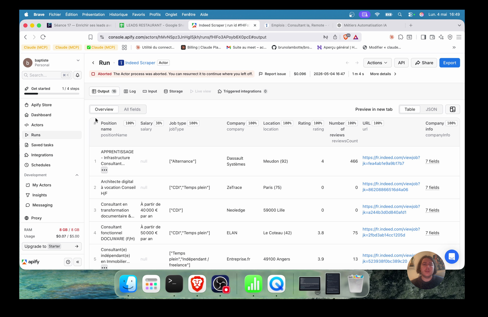
45 · Concurrence
Je règle la vitesse selon la stabilité
Quand le runner est lent ou instable, je baisse la concurrence. Mieux vaut traiter moins vite que perdre des batchs.
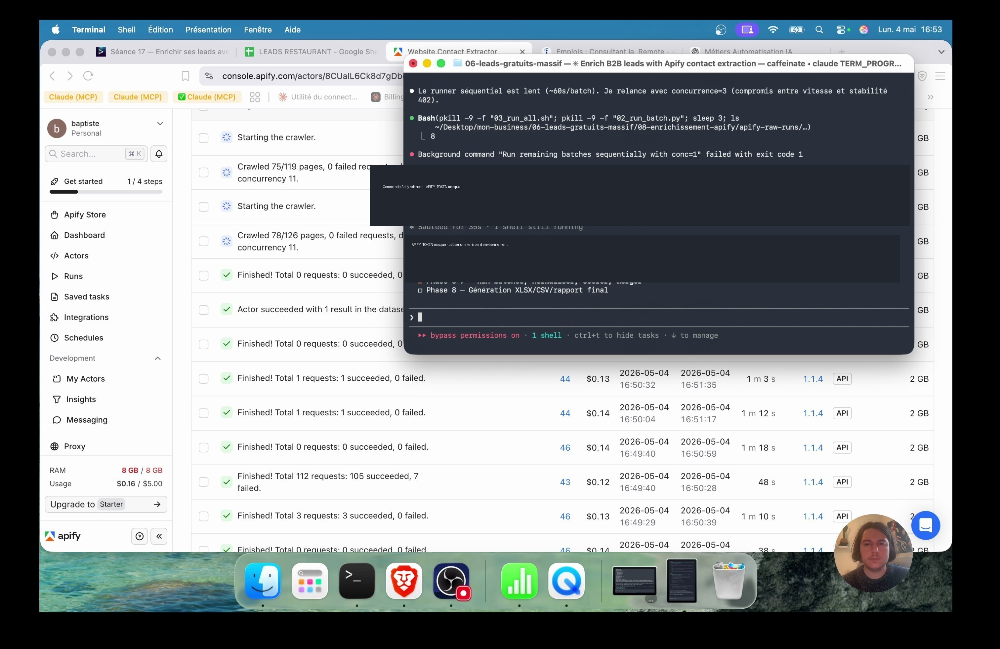
46 · RAM
La RAM peut faire exploser l’abonnement
Sur Apify, dépasser certains seuils de ressources peut obliger à changer de plan. Je surveille avant d’aller trop loin.
47 · Fails
Les erreurs sont normales
Des batchs échouent, des sites bloquent, certains domaines ne répondent pas. L’important est de tracer, diagnostiquer et relancer proprement.
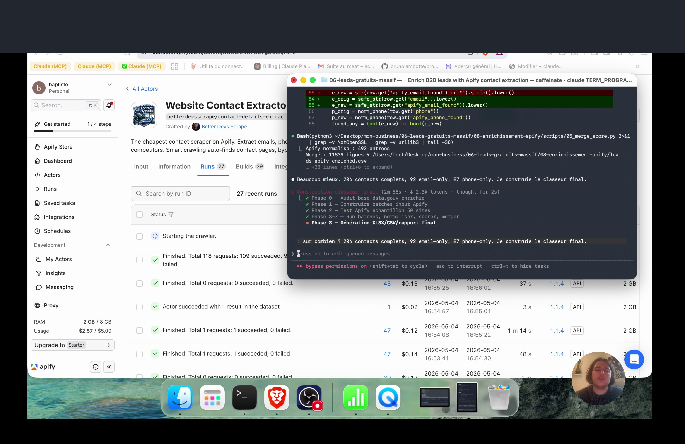
48 · Debug
Prompt de diagnostic des batchs échoués
Ce prompt sert quand je vois des fails et que je veux relancer sans refaire les batchs réussis.
Prompt à copierPrompt de diagnostic des batchs échoués
Ce prompt sert quand je vois des fails et que je veux relancer sans refaire les batchs réussis.
Analyse les batchs Apify échoués. Ne relance pas les batchs réussis. Pour chaque échec, donne : - batch_id - raison probable - action recommandée - relance possible ou non - risque coût/RAM Puis propose une relance avec concurrence réduite.
49 · Relance
Je relance avec méthode
Je distingue batch réussi, batch partiel, site bloqué et erreur de configuration.
| Point | Usage | Décision |
|---|---|---|
| Succès | Ne pas relancer | Garder le run_id |
| Partiel | Analyser sortie | Compléter si utile |
| Fail | Lire logs | Relancer avec concurrence basse |
| Bloqué | Marquer notes | Ne pas forcer |
50 · Résultats
Je contrôle les contacts récupérés
Je regarde les emails, téléphones, Instagram et les pages sources. Je ne me contente pas d’un compteur.
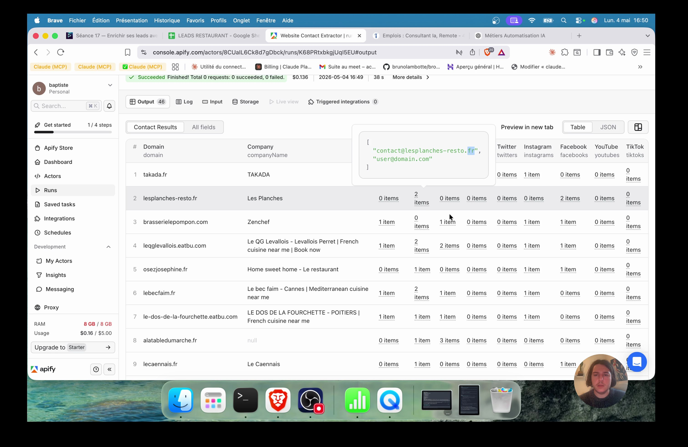
51 · Lecture
Les premiers résultats donnent déjà une tendance
Sur l’exécution montrée, je récupère beaucoup d’emails, des téléphones, des réseaux et des contacts exploitables, même sans crawler toute la base.
Un contact direct exploitable.
Un fallback très fort.
Un signal utile pour restaurants.
52 · Budget
Je préfère m’arrêter avant de dépasser le budget
Une bonne méthode sait dire stop. Je peux reprendre plus tard avec le ledger au lieu de tout relancer.
Une bonne méthode sait dire stop. Je peux reprendre plus tard avec le ledger au lieu de tout relancer.
53 · Score
Je prépare un score de contact
Le score sert à décider quel lead est prêt pour la prospection et quel lead doit passer en vérification.
| Point | Usage | Décision |
|---|---|---|
| +30 | Email sur domaine officiel | Très fort |
| +25 | Téléphone confirmé | Fort |
| +15 | Réseau social trouvé | Utile |
| -20 | Source ambiguë | Revue manuelle |
54 · Canal
Je choisis le meilleur canal automatiquement
Email confirmé, téléphone confirmé, formulaire, Instagram ou manuel : le fichier doit recommander une action.
Envoyer un premier message.
Appel ou qualification.
Passer en manuel assisté.
55 · Rapport
Prompt de rapport final
Ce prompt force une synthèse propre et exploitable avant de passer à la séance suivante.
Prompt à copierPrompt de rapport final
Ce prompt force une synthèse propre et exploitable avant de passer à la séance suivante.
Génère un rapport final clair pour l'enrichissement Apify. Je veux : - nombre de leads traités - couverture crawl - emails trouvés - téléphones trouvés - réseaux trouvés - coût estimé - erreurs fréquentes - recommandations pour la prochaine séance - fichiers créés - aucun token affiché.
56 · Sortie
Je génère un fichier final lisible
Le dashboard final montre la couverture, les emails trouvés, les téléphones, les réseaux et la base prête pour la suite.
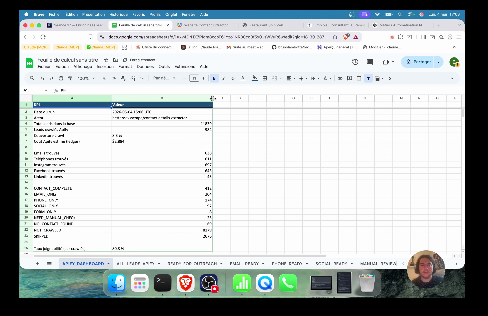
57 · Sorties
Les fichiers créés ont chacun un rôle
Le XLSX sert au travail, le CSV aux outils, le rapport au contrôle, les JSON au debug.
| Point | Usage | Décision |
|---|---|---|
| XLSX | Travail et lecture humaine | Fichier principal |
| CSV | Import outils | Interopérabilité |
| rapport-apify.md | Bilan et décisions | Contrôle |
| raw-runs | Debug | Traçabilité |
58 · Validation
Je vérifie le fichier final
Je vérifie les sources, les colonnes, les statuts et l’absence de token.
- 01
Toutes les colonnes existantes sont conservées
- 02
Les colonnes apify_* sont ajoutées
- 03
Les contacts ont une source
- 04
Les conflits sont marqués
- 05
Aucun token n’apparaît
59 · Colonnes
Les colonnes apify_* restent séparées
Cette séparation permet de comparer Serper, data.gouv et Apify sans confusion.
Identité légale.
Contacts publics.
Action suivante.
60 · Email
Je nettoie les emails avant usage
Le nettoyage évite les `mailto:`, espaces, adresses techniques inutiles et doublons.
| Point | Usage | Décision |
|---|---|---|
| mailto: | à retirer | Nettoyage |
| contact [at] domaine.fr | à convertir | Normalisation |
| webmaster@ | à déprioriser | Pertinence |
| doublons | à fusionner | Qualité |
61 · Téléphone
Je nettoie aussi les numéros
Je garde le meilleur numéro, mais je conserve les autres dans une colonne complète.
| Point | Usage | Décision |
|---|---|---|
| Mobile | souvent le plus direct | Fort |
| Fixe | utile pour restaurant | Fort |
| Multiple | garder liste complète | Conserver |
| Incohérent | mettre en revue | Ne pas utiliser |
62 · Réseaux
Les réseaux ajoutent de la profondeur
Instagram, Facebook, LinkedIn, TikTok, YouTube et WhatsApp deviennent des signaux utiles pour qualifier le lead.
Preuve d’activité.
Canal local fréquent.
Utile pour B2B et dirigeants.
63 · Conflit
Un contact contradictoire part en revue manuelle
Si une donnée ne vient pas du bon domaine ou contredit une donnée existante, je ne l’utilise pas automatiquement.
64 · Merge
La fusion doit rester non destructive
Je conserve l’existant, j’ajoute Apify, puis je marque le statut de merge.
colonnes existantescolonnes apify_*statut mergescore contactaction recommandée
65 · Preuve
La page source protège la qualité
Quand l’élève ou le client demande d’où vient un email, je peux répondre précisément.
Je peux expliquer la donnée.
Je limite les erreurs de prospection.
Je rends le système défendable.
66 · GitHub
Je ne publie pas les mauvais fichiers
La vidéo, les temporaires, `.DS_Store`, les tokens et les logs sensibles restent hors GitHub.
- 01
Pas de vidéo dans le repo public
- 02
Pas de .DS_Store
- 03
Pas de token
- 04
Pas de logs sensibles
- 05
Seulement HTML, images, prompt et transcription utile
67 · Décision
Je décide quoi faire avec chaque lead
Le statut final prépare la prospection automatisée.
| Point | Usage | Décision |
|---|---|---|
| READY_FOR_OUTREACH | Contact fiable et source claire | Prospection |
| MANUAL_REVIEW | Contradiction ou source faible | Contrôle |
| NO_CONTACT_FOUND | Rien trouvé | Autre canal |
| SKIP | Match légal faible | Ne pas contacter |
68 · Compétence
La compétence n’est pas Apify seul
La vraie compétence, c’est de piloter un outil payant avec une méthode, un budget, des preuves et une sortie utile.
La vraie compétence, c’est de piloter un outil payant avec une méthode, un budget, des preuves et une sortie utile.
69 · Cas clients
Je peux réutiliser Apify ailleurs
Jobs, réseaux sociaux, concurrents, annuaires, marketplaces : le même raisonnement s’applique.
Scraper offres et automatiser candidatures.
Surveiller concurrents et nouveautés.
Extraire posts, hashtags, signaux publics.
70 · Limite
Je ne promets pas 100 % de couverture
Certains sites n’ont pas d’email, certains bloquent, certains contacts sont cachés. Le système doit dire ce qu’il a vraiment trouvé.
71 · Prompt
Le prompt maître est volontairement cadré
Il protège le token, les coûts, les batchs, la fusion et la sortie finale.
Token en variable uniquement.
Test puis batchs.
Source et statut obligatoires.
72 · Commandes
Commandes à garder sous la main
Ces commandes servent à lancer la session proprement dans ton environnement.
Prompt à copierCommandes à garder sous la main
Ces commandes servent à lancer la session proprement dans ton environnement.
cd ~/Desktop/mon-business/06-leads-gratuits-massif export APIFY_TOKEN="[TON_TOKEN_APIFY]" claude --dangerously-skip-permissions # Variante si tu préfères charger depuis un fichier local non versionné : source .env claude --dangerously-skip-permissions
73 · Choisir
Prompt pour choisir un actor sur un autre projet
Ce prompt est utile quand tu changes de cible ou de plateforme.
Prompt à copierPrompt pour choisir un actor sur un autre projet
Ce prompt est utile quand tu changes de cible ou de plateforme.
Tu es mon analyste Apify. Je veux enrichir une base B2B avec des contacts publics depuis les sites officiels. Compare les actors disponibles pour : - recevoir une liste d'URLs - rester sur le même domaine - extraire emails, téléphones, réseaux sociaux - retourner les pages sources - fonctionner par lots Donne-moi l'actor recommandé, ses limites, son coût probable et un test de 5 URLs.
74 · Échantillon
Prompt pour imposer le test avant production
Ce prompt réduit le risque de coût inutile.
Prompt à copierPrompt pour imposer le test avant production
Ce prompt réduit le risque de coût inutile.
Avant de traiter toute la base, lance uniquement un échantillon de 50 sites. Mesure : - pages crawlées - emails trouvés - téléphones trouvés - réseaux trouvés - sites bloqués - coût estimé - temps moyen Si le taux email + téléphone est inférieur à 10 %, arrête et fais un diagnostic.
75 · Fails
Prompt pour corriger les runs échoués
Ce prompt évite de repartir de zéro.
Prompt à copierPrompt pour corriger les runs échoués
Ce prompt évite de repartir de zéro.
Analyse les batchs Apify échoués. Ne relance pas les batchs réussis. Pour chaque échec, donne : - batch_id - raison probable - action recommandée - relance possible ou non - risque coût/RAM Puis propose une relance avec concurrence réduite.
76 · Rapport
Prompt pour demander le bilan final
Ce prompt transforme les résultats techniques en support de décision.
Prompt à copierPrompt pour demander le bilan final
Ce prompt transforme les résultats techniques en support de décision.
Génère un rapport final clair pour l'enrichissement Apify. Je veux : - nombre de leads traités - couverture crawl - emails trouvés - téléphones trouvés - réseaux trouvés - coût estimé - erreurs fréquentes - recommandations pour la prochaine séance - fichiers créés - aucun token affiché.
77 · Checklist
Checklist élève avant de passer à la suite
Si une case manque, tu reprends la section concernée.
- 01
Le fichier data.gouv existe
- 02
Le token est en variable d’environnement
- 03
Le test 50 sites est validé
- 04
Les batchs réussis sont tracés
- 05
Le fichier final est généré
- 06
Le budget est sous contrôle
78 · Erreurs
Les erreurs fréquentes à éviter
Ces pièges coûtent du temps, de l’argent ou de la qualité.
| Point | Usage | Décision |
|---|---|---|
| Lancer trop large | Coût et RAM explosent | Commencer par 50 sites |
| Token visible | Fuite de sécurité | Variable d’environnement |
| Écraser les colonnes | Perte de contexte | Préfixe apify_* |
| Ignorer les fails | Base trouée | Ledger + relance ciblée |
79 · Méthode
La méthode en 8 mouvements
C’est la structure que tu peux reprendre pour un client.
Choisir la source
Tester petit
Lire les logs
Batcher
Tracer
Nettoyer
Scorer
Passer à la prospection
80 · Récap
Ce que tu dois avoir à la fin
Une base enrichie, sourcée, contrôlée et prête pour la séance suivante : nettoyer, scorer et préparer la prospection automatisée.
Je dispose d’un XLSX avec contacts publics et sources.
Je sais refaire le système pour un autre secteur.
Je peux nettoyer, scorer et préparer la prospection automatisée.